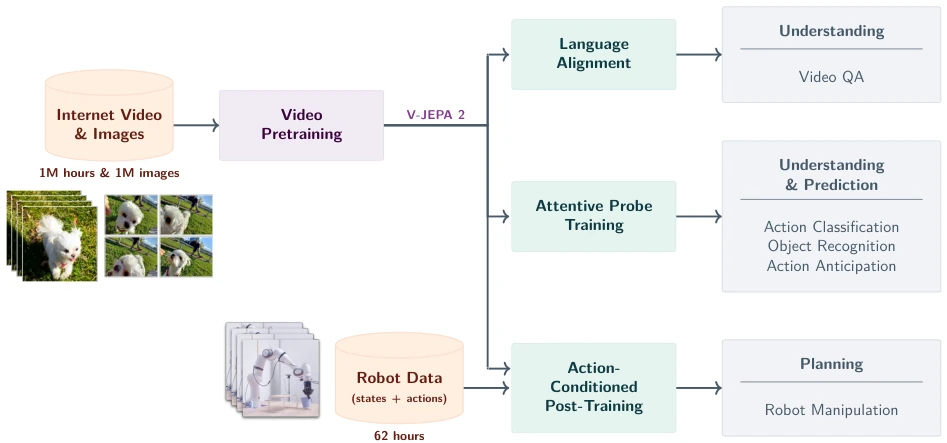
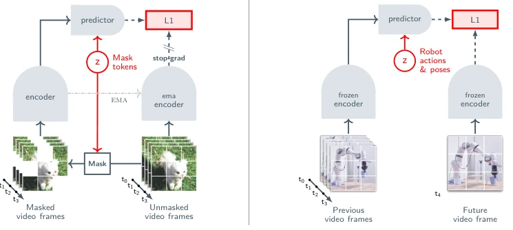
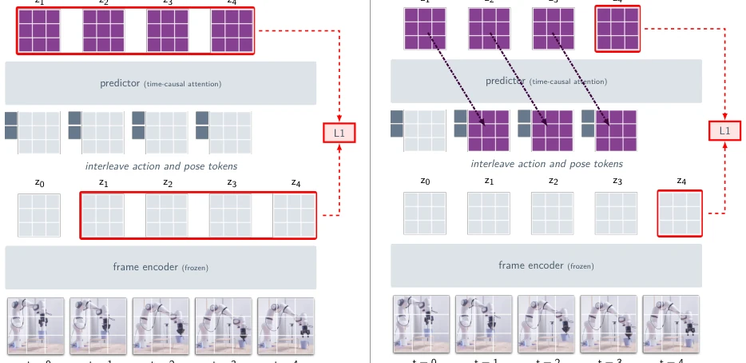
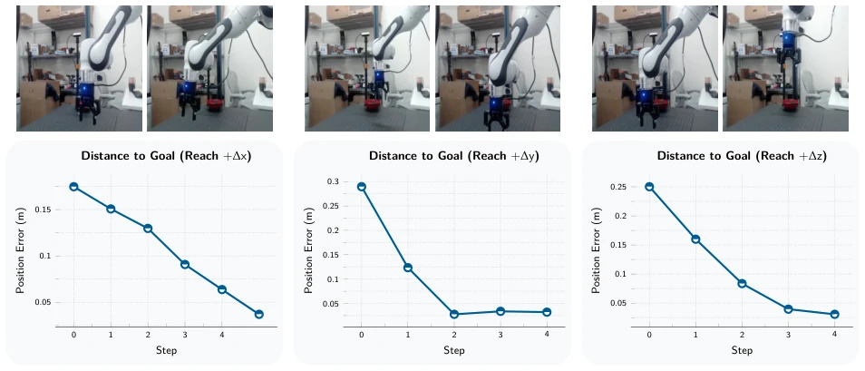
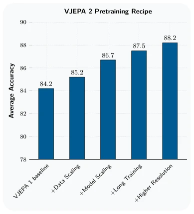
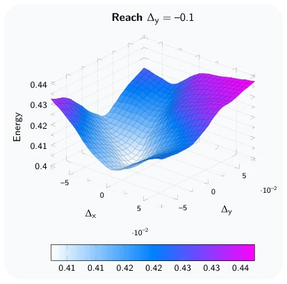
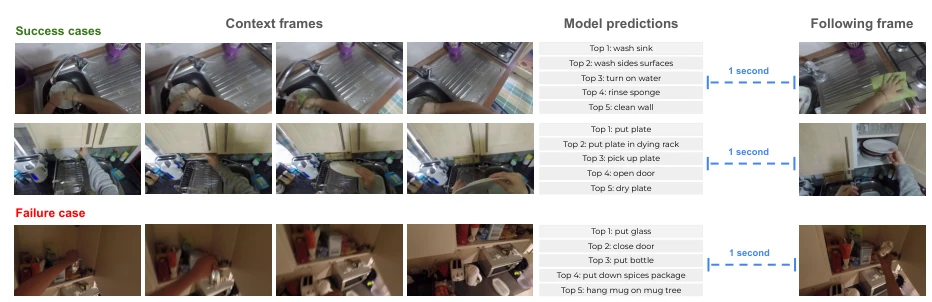
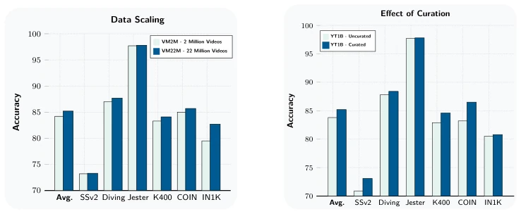
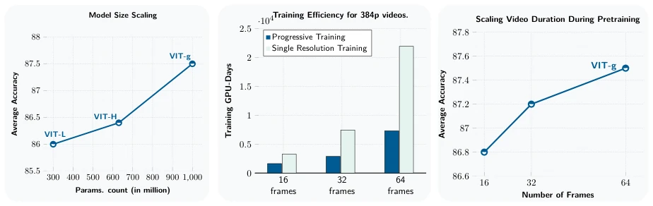
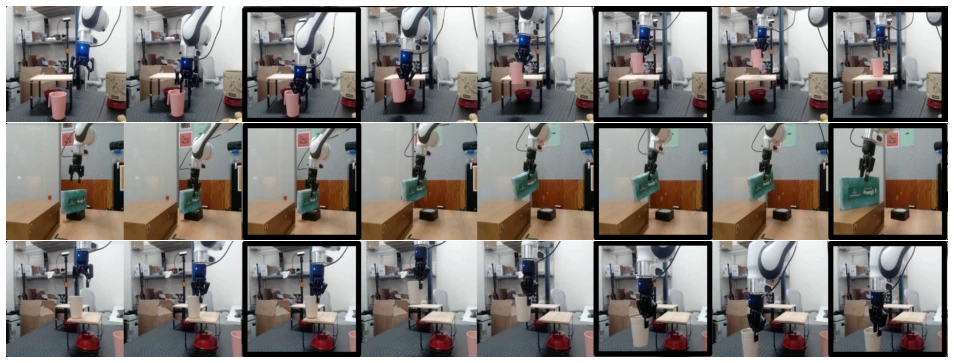

V-JEPA 2 is another large-scale validation of LeCun's world model theory by Meta, attempting to build embodied intelligence by "watching videos" instead of "conducting experiments". The highlights are indeed substantial: extending self-supervised pretraining to 1 billion parameters and millions of hours of video, video understanding and QA performance leading benchmarks, proving the value of large-scale representation learning. But the so-called "zero-shot planning" is actually a bit of wordplay — after all, it still fed 62 hours of robot data for post-training, just without task labels and rewards, not truly "data-free". For complex physical interactions, it still relies on latent space prediction rather than pixel generation, saving compute power, but still far from true general intelligence. However, being able to perform zero-shot grasping in two new labs indeed proves the transferability of representation learning, but the cost of collecting these 62 hours of data is not low either, and whether it counts as "pure observation learning" is still questionable, after all, robot data is also data.
研究动机Motivation
核心痛点在于具身智能依赖昂贵的交互数据。现有世界模型要么完全依赖状态 - 动作序列（Hafner et al., 2019b），数据稀缺限制了扩展性；要么基于视频生成（Hu et al., 2023），计算成本过高且规划能力弱。人类通过观察学习内部世界模型（LeCun, 2022），但 AI 往往忽略了这一点。本文旨在解决数据效率问题，利用互联网视频学习通用表征，仅用少量机器人数据微调即可规划。这比纯模仿学习（如行为克隆）更灵活，比纯生成模型更高效，试图在观察与行动之间找到平衡点，减少对真实环境交互的依赖。
The core pain point lies in embodied intelligence relying on expensive interaction data. Existing world models either rely entirely on state-action sequences (Hafner et al., 2019b), where data scarcity limits scalability; or are based on video generation (Hu et al., 2023), with excessively high computational costs and weak planning capabilities. Humans learn internal world models through observation (LeCun, 2022), but AI often overlooks this. This paper aims to solve the data efficiency problem, using internet videos to learn general representations, requiring only a small amount of robot data for fine-tuning to plan. This is more flexible than pure imitation learning (such as behavior cloning), more efficient than pure generative models, attempting to find a balance point between observation and action, reducing dependence on real environment interaction.

Figure 1 V-JEPA 2 Overview. Leveraging 1M hours of internet-scale video and 1M images, we pretrain the V-JEPA 2 video model using a visual mask denoising objective (Bardes et al., 2024; Assran et al., 2023), and leverage this model for downstream tasks such as action classification, object recognition, action anticipation, and Video Question Answering by aligning the model with an LLM backbone. After pretraining, we can also freeze the video encoder and train a new action-conditioned predictor with a small amount of robot interaction data on top of the learned representations, and leverage this action-conditioned model, V-JEPA 2-AC, for downstream robot manipulation tasks using planning within a model predictive control loop.
Overall, a two-stage training approach is adopted. Stage 1 V-JEPA 2 pretraining: Based on masked denoising objectives, training encoder and predictor on 1M hours of internet videos. Innovations include: 1) Model scaled to 1B parameters (ViT-g); 2) Introduction of 3D-RoPE to enhance spatiotemporal positional encoding; 3) Progressive resolution training, first training on short frames low resolution, then increasing resolution in the cooling phase, saving 8x GPU time. Stage 2 V-JEPA 2-AC post-training: Freeze encoder, train action-conditioned predictor on 62 hours of Droid robot data. Using Teacher Forcing and Rollout Loss optimization to ensure the stability of autoregressive prediction. Planning stage adopts Model Predictive Control (MPC), optimizing action sequences by minimizing the L1 distance between predicted states and target states, using cross-entropy methods to search for optimal trajectories.

Figure 2 Multistage training. (Left) We first pretrain the V-JEPA 2 video encoder on internet-scale image and video data using a visual mask denoising objective (Bardes et al., 2024; Assran et al., 2023). A video clip is patchified into a sequence of tokens and a mask is applied by dropping a subset of the tokens. The encoder then processes the masked video sequence and outputs an embedding vector for each input token. Next, the outputs of the encoder are concatenated with a set of learnable mask tokens that specify the position of the masked patches, and subsequently processed by the predictor. The outputs of the predictor are then regressed to the prediction targets using an L1 loss. The prediction targets are computed by an ema-encoder, the weights of which are defined as an exponential

Figure 6 V-JEPA 2-AC training. V-JEPA 2-AC is trained in an autoregressive fashion, utilizing a teacher forcing loss and a rollout loss. (Left) In the teacher forcing loss, the predictor takes the encoding of the current frame representation as input and learns to predict the representation of the next timestep. (Right) The rollout loss involves feeding the predictor’s output back as input, allowing the model to be trained to predict several timesteps ahead. By optimizing the sum of these two losses, V-JEPA 2-AC enhances its ability to accurately forecast the future by reducing error accumulation during rollouts.

Figure 8 Single-Goal Reaching. Single-goal reaching involves moving the end-effector to a desired location in space based on a single goal image. This task measures for a basic understanding of actions as well as a 3D spatial understanding of the scene, including depth, from the monocular RGB camera. In each step, we use V-JEPA 2-AC to plan a sequence of actions by minimizing the L1 distance between the model’s imagined future state representations and its representation of the goal frame. The first action is then executed before re-planning in the next time step. During planning, we only sample individual actions in the L1-Ball of radius 0.075 centered at the origin. Thus, the maximum achievable decrease in cartesian distance to the goal in a single step is 0.13 (∼13 cm).
Datasets include VideoMix22M (22 million videos) and Droid (62 hours of robot data). Baselines compared Octo (VLA) and Cosmos (video generation). Evaluation covers video understanding (Something-Something v2 77.3%), action prediction (Epic-Kitchens-100 39.7%), and robot manipulation. Ablation experiments show that data scaling, model size, and training duration all bring positive gains. In robot experiments, V-JEPA 2-AC achieved zero-shot grasping and placing on unseen Franka manipulators, without task-specific rewards. Energy landscape analysis indicates the model can reasonably infer action effects, but planning capabilities are still limited by the accuracy of latent space representations.

Figure 3 Scaling Ingredients. The effects of scaling interventions on average accuracy across 6 image and video classification tasks (SSv2, Diving-48, Jester, Kinetics, COIN, ImageNet) using a ViT-L/16 model as baseline.

Figure 9 V-JEPA 2-AC Energy Landscape. Energy landscape for single-goal reaching task with respect to end-effector cartesian-control ac- tion (sweeping ∆x and ∆y while holding ∆z = 0 fixed); ground truth action relating goal image to start frame is located at (∆x, ∆y) = (0, −0.1). We see that the energy function achieves its minimum around (∆x, ∆y) ≈(0, −0.05), indicating that the model has learned to reasonably infer the effect of actions without requiring precision sensing.

Figure 11 Visualization of EK100 prediction. (Left): four selected frames from the context frames. (Middle): model predictions, ordered by likelihood. (Right): following frame after the 1 second anticipation time. We show two examples where the model is successful and one example where the model fails.
其他图片Other Figures

Figure 4 Data Scaling & Curation. We train and compare models on different data-mixes. Models are ViT-L/16 trained for 90K iterations using a cosine learning schedule following Bardes et al. (2024). (Left) We compare the performance of a ViT-L/16 model pretrained on the VM2M dataset and our VM22M dataset. Training on the VM22M dataset leads to a +1 point improvement in average performance. Performance improvement is more pronounced on appearance-based tasks such as Kinetics-400, COIN, and ImageNet (Right) We compare the performance of a ViT-L/16 model pretrained on YT1B and a model pretrained on our Curated-YT1B dataset, which leverages our cluster-based curation. Training on the curated dataset leads to a +1.4 point improvement on average performances, showing the effectiveness of data-cu

Figure 5 Model Scaling. We explore the impact of scaling model size and input video resolution. All models are trained on the VideoMix22M pretraining dataset. (Left) Average performance across six understanding tasks as a function of model scale. Models are trained with a constant learning rate until performance plateaus on downstream tasks. We then cool down the model using 64 frames at 256 × 256 resolution and report post-cooldown performance. Scaling the model size from 300M to 1B parameters yields a +1.7 point average improvement. (Middle) Training times (GPU-days) for ViT-g on A100 GPUs when training videos at 384 × 384 resolution with different numbers of frames per clip. We compare progressive resolution training (252K iterations at 16 frames / 256 × 256 resolution, followed by 12K

Figure 10 Pick-&-Place. Closed-loop robot execution of V-JEPA 2-AC for multi-goal pick-&-place tasks. Highlighted frames indicate when the model achieves a sub-goal and switches to the next goal. The first goal image shows the object being grasped, the second goal image shows the object in the vicinity of the desired location, and the third goal image shows the object placed in the desired position. The model first optimizes actions with respect to the first sub-goal for 4 time-steps before automatically switching to the second sub-goal for the next 10 time-steps, and finally the third goal for the last 4 time-steps. Robot actions are inferred through goal-conditioned planning. The V-JEPA 2-AC model is able to perform zero-shot pick-&-place tasks on two Franka arms in different labs, with